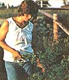
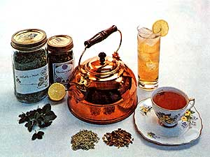
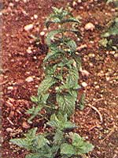
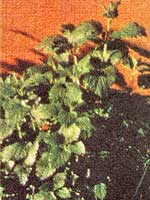
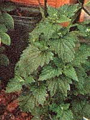

Here-for the hot weather ahead-is a healthful alternative to the "summer cola-binge blues"
Most people think all teas taste about the same. But then, most people don't know what it's like to sit down after supper with a good book and a cup of steaming-hot tea . . . brewed from fresh-grown herbs!
I began making my own herb teas about two years ago and have since learned that fresh tea blends are about as far removed (taste-wise) from plastic-packaged orange pekoe as homebaked bread is from the store-bought kind. So, if you haven't yet discovered herb teas for yourself, take it from me: You're missing out on a real treat!
My favorite tea makin's are alfalfa, lemon balm, mint (all kinds), rose hips, rosemary, and thyme, although zesty, mineral-rich teas can be brewed from almost any edible herb, wild or cultivated. (Note: The key word here is edible. Do NOT brew a tea from any plant that you cannot positively identify as being non-toxic.)
Herbs for tea are not hard to grow. (See the list at the end of this article for the addresses of some mail-order suppliers.) Most do well in a sandy loam fortified with a small amount of compost. (I use a 2:4:1 mix of loam, sand, and sifted compost.) If-like me-you decide to grow some or all of your herbs in pots indoors, you'll want to make sure those containers have holes in their bottoms for good drainage. Or, if you prefer, you can grow your "tea fixin's" right in your vegetable garden. (I've successfully raised thyme, lemon balm, summer savory, catnip, and parsley this way.) In this case, be sure to plant perennial varieties well off to one side so that-come fall-you won't "forget" and plow them under.
Around this time of year, many tea ingredients can be foraged. Here in western Montana, for instance, I go up into the hills every spring to gather wild strawberry, raspberry, and huckleberry leaves, each of which lends a delightful tanginess (not to mention vitamin C) to otherwise-mild tea blends. (An elderly lady I know told me that the pioneers used to dig under the spring snow to obtain wild strawberry leaves. From these leaves the settlers brewed a "spring tonic" that supposedly gave them extra pep!)
I also forage clover blossoms and alfalfa (both of which can be found in fields and along side roads) and wild mint (which often grows around ditchbanks). If you don't know how to identify these or other wild-tea ingredients, ask an old-timer in your area to show you what's what.
One "flavor ingredient" I like to use in my teas is citrus peel. I buy only organically grown grapefruit, oranges, lemons, and limes for this purpose (since the rinds of the agribiz citrus fruits sold in supermarkets are often coated with pesticides and/or coal tar dyes) . . . then-after grating the peel finely I set the tangy tidbits out to dry on paper towels.
The list of possible tea ingredients is very long ( much too long to present in this limited amount of space). Just so you'll have some idea of the possibilities, however, here are a few of the many plant materials you can use to make delicious hot (and cold) teas:
alfalfa
bee balm
blackberry
blueberry
catnip
celery
comfrey
costmary
hyssop
lemon balm
mint (all kinds)
oat straw
parsley
raspberry
rue
sage
shavegrass
licorice
chamomile
chrysanthemum
clover
elderberry
linden
alfalfa
anise
caraway
celery
coriander
dill
fennel
fenugreek
rose hips
If you're like me, you'll probably want to harvest a large quantity of leaves, blossoms, seeds, roots, or berries all at once and dry the cache for future use. Here's the procedure I use:
1. Gather leaves, berries, or blossoms in mid-morning, after most of the dew has evaporated. (If the leaves are dusty, wash them in cold water and drain or shake off excess moisture.)
2. Set the vegetation in a dry, warm place, out of direct sunlight. (Ole Sol's rays tend to damage the flavor of just-picked herbs.) I dry my tea ingredients in the attic during the summer months, but a drying box or a spot near a window would do just as well. The important thing is to lay the herbage out one plant deep on a clean paper towel, dish towel, or (if you have one) drying screen. (Don't pile the herbs up . . . the ones on the bottom might become moldy.) To protect the tea makin's from dust, lay more paper towels-or cheesecloth-on top of them.
3. Allow the plants to dry for about 10 days (longer, if they still feel moist), then store them in tightly closed, labeled jars.
Individual herbs can be used singly to brew refreshing, flavorful teas. . . but the most fun-and the best teas-comes when you begin to experiment with herb blends. To make a blend, all you have to do is [1] select the herbs you wish to combine, [2] place them together in a jar, [3] cap the container tightly, and [4] store the jar unopened for at least 10 days before using its contents. (The last step is necessary to achieve the proper mixing of flavors and bouquets.)
The following are some of my all-time favorite herb blends:
1 cup of crumbled, dried alfalfa
1 cup of crumbled, dried spearmint or peppermint leaves
(Note: Bee balm can replace mint.)
1/2 cup of dried peppermint leaves
1 cup of dried alfalfa
3 tablespoons of dried lemon balm leaves
3 tablespoons of dried, grated lemon peel
1 cup of dried mint leaves
2 cups of dried strawberry leaves
1 tablespoon of powdered ginger
1 stick of cinnamon
1 cup of dried rose hips
1 teaspoon of dried, grated lemon peel
1/4 cup of dried lemon grass or lemon balm leaves
2 teaspoons of anise seeds
1 cup of dried alfalfa
1 cup of dried elderberry blossoms
1 teaspoon of dried, grated orange peel
CELERY LEAF TEA
1 cup of dried celery leaves
2 teaspoons of thyme
1 teaspoon of celery seeds
2 sticks of cinnamon
2 cups of dried clover blossoms
1 teaspoon of dried, grated orange peel
As a general rule, figure on about a teaspoon of dried herb(s)-more or less, depending on your taste-per cup of tea. (Double the amount of ingredients if you're using fresh herbs.) And remember that you can get more flavor out of the leaves, blossoms, and berries if you'll crush them.
When you're ready to "brew up a refresher", first warm your teapot with scalding-hot water. (This is an old trick my English grandmother taught me, and it really does result in better tea.) Then place your ingredients directly in the pot (or tea ball), pour boiling water into the container (or into your cup, if you're making just one serving), and let the tea steep a full ten minutes. Serve the hot drink "as is", or-if you wish-flavor it with grated fruit rind, lemon juice, or honey.
For a savory pick-me-up on a hot day, try serving your favorite tea "on the rocks" . . . or mix the chilled infusion with one or more fruit juices to create a spicy "herbal punch". (I can't think of a more healthful, economical substitute for soda pop.)
If you ever find yourself with more tea makin's on your hands than you can use, you can probably sell 'em. I've sold some of my herb blends to local health food stores for 25 cents to 30 cents an ounce. (In fact, my last batch sold out the very first day it was offered!)
Whether you decide to sell your herbs or not, though, you're sure to enjoy the healthful, low-cost soda pop substitutes you make from them. In fact, once you've sipped some ice-cold (or steaming-hot) lemon-mint tea . . . or strawberry-ginger tea . . . or anise-elderberry tea . . . or any of the other blends mentioned above
. you may never buy orange pekoe again!
Comstock, Ferre & Co.
263 Main St.
Wethersfield, Conn. 06109
Le Jardin Du Gourmet
Ramsey, N.J. 07446
Nichols Garden Nursery
1190 North Pacific Highway
Albany, Ore. 97321
Thompson & Morgan Inc.
Box 24
Somerdale, N.J. 08083
|
 PHOTOS BY LINDA AND DAVID SLATER SPEARMINT |
 LEMON BALM |
 CATNIP |
|
 |
 |
|